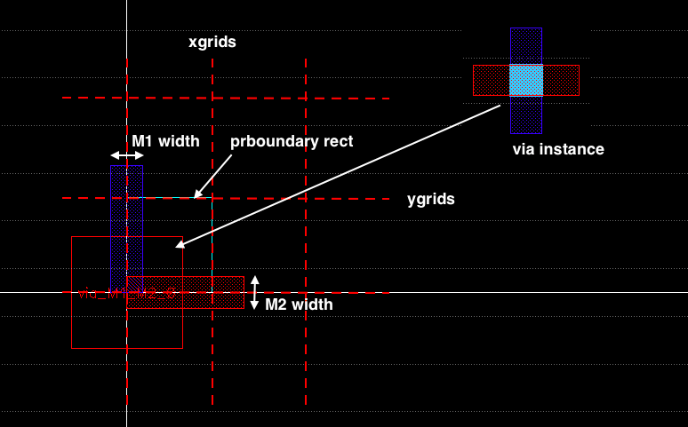
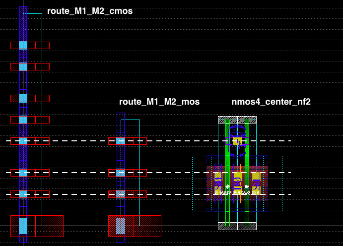

Laygo setup for new technologies¶
This section describes how to make a laygo setup for the technology in use. This document is assuming BAG is already set up for the technology (at least for schematic generations), but no laygo setup is created. This document helps users to prepare technology dependent setup files and template libraries.
Overview¶
Example setup files¶
Instead of starting from scratch, example setups for generic technologies are provided. You can get files in the following repos.
laygo_config.yaml¶
The only technology file to be described by users is laygo_config.yaml. It defines basic technology dependent information (i.e. layer names for route layers). Here’s a example laygo_config.yaml for cds_ff_mpt technology (Cadence generic PDK for finfet and multiple patterning technology).
#default_laygo_config file
metal_layers: #metal layers
- [M0, donotuse]
- [M1, drawing]
- [M2, drawing]
- [M3, drawing]
- [M4, drawing]
- [M5, drawing]
- [M6, drawing]
- [M7, drawing]
- [M8, drawing]
- [M9, drawing]
via_layers: #via layers
- [V0, donotuse]
- [V1, drawing]
- [V2, drawing]
- [V3, drawing]
- [V4, drawing]
- [V5, drawing]
- [V6, drawing]
- [V7, drawing]
- [V8, drawing]
pin_layers: #pin layers
- [text, drawing]
- [M1, pin]
- [M2, pin]
- [M3, pin]
- [M4, pin]
- [M5, pin]
- [M6, pin]
- [M7, pin]
- [M8, pin]
- [M9, pin]
prboundary_layer: [prBoundary, boundary] #boundary layer
tech_lib: cds_ff_mpt
text_layer: [text, drawing]
physical_resolution: 0.001
Here’s description on items.
* **metal_layers** (list): contains [*layername*, *layerpurpose*]
of metal layers to be used for routing, starting from the bottom
layer to the top layer.
* **via_layers** (list): contains [*layername*, *layerpurpose*]
of via layers to be used for routing, starting from the bottom
layer to the top layer.
* **pin_layers** (list): contains [*layername*, *layerpurpose*]
of pin layers to be used for routing, starting from the bottom
layer to the top layer.
* **prboundary_layer** (list): contains [*layername*, *layerpurpose*]
of the prBoundary layer for placement.
* **tech_lib** (str): name of technology.
* **text_layers** (list): contains [*layername*, *layerpurpose*]
of the text layer for annotations.
* **physical_resolution** (float): minimum layout grid resolution in
micron. Most advanced nodes have grid resolutions ranging from 0.01
to 0.001.
As you can see, all parameters are straightforward and can easily be filled up.
(tech_lib).layermap (optional)¶
For GDS flow, a separate layermap file is needed to map the layer names to actual layer ids. Usually the layermap file is provided by Foundry and can be found in the PDK library (because the file is used to stream out a layout to a GDS file). Users can also try to make a layermap file by themselves. Here’s a example of the layermap file (numbers are not from any real/generic PDKs). For BAG flow this file is not needed.
#technology layer information for gds export
#you may find this in the cadence techlib directory
#layername layerpurpose stream# datatype
text drawing 100 0
prBoundary drawing 101 0
M1 drawing 1 0
M1 pin 1 1
M2 drawing 2 0
M2 pin 2 1
M3 drawing 3 0
M3 pin 3 1
M4 drawing 4 0
M4 pin 4 1
M5 drawing 5 0
M5 pin 5 1
M6 drawing 6 0
M6 pin 6 1
M7 drawing 7 0
M7 pin 7 1
M8 drawing 8 0
M8 pin 8 1
M9 drawing 9 0
M9 pin 9 1
VIA1 drawing 11 0
VIA2 drawing 12 0
VIA3 drawing 13 0
VIA4 drawing 14 0
VIA5 drawing 15 0
VIA6 drawing 16 0
VIA7 drawing 17 0
VIA8 drawing 18 0
template library¶
This is the most critical part for the setup. Laygo uses handcraft templates of primitive devices for layout generations, meaning that users need to build the template devices by themselves if not provided. Basically there are 4 different cells to be created.
1. Placement grids: defines the grid resolutions that devices will
be placed. **prboundary_layer** is used for setting the resolution.
2. Routing grids: defines the grid resolutions that routing wires
and vias will be placed. Rects with **metal_layers** are used to
define the width / spacing / coordinate of the routing grid.
3. Device template cells: templates of devices will be placed on one
of the placement grids
4. Via template cells: templates of vias will be placed on one of
the route grids.

Template and grid cell examples
Multiple placement grids / routing grids / devices / vias can be defined for same technology / layer / device type. For example, users can use 2 different types of grids (e.g thin and thick grids) for Metal1 and Metal2. Or 2 different set of NMOS templates (short channel and long channel) can be defined. This gives a flexibility on generated layout while still abstracting design rules.
The set of template / grid elements depends on user’s preference, but here are cells that need to be included to generate layout in the example documentation.
Example template library name¶
For generator examples, (tech_lib)_microtemplates_dense is used for the primitive template library name

Example placement grids¶
placement_basic : a default placement grid cell. Contacted Poly Pitch(CPO) for the resolution in x direction and fin grid or contact pitch is a good candidate for the placement grid. Note that the size of any compatible templates should be a multiple of the placement grid.

placement_basic example
Example routing grids and vias¶
route_M1_M2_basic : a default M1_M2_route grid cell. Minimum metal spacings and widths are used for the resolution and metal width.

route_M1_M2_basic_thick: an M1_M2 grid that is composed of thin M1 and thick M2. This grid is useful for power grid routings.

route_M1_M2_mos, route_M1_M2_cmos : M2_M2 grids that are designed to be compatible to NMOS/PMOS/CMOS stuctures. Note that grid coordinates are aligned to gate/drain/source pins of fets.

M2_M3 grids (route_M2_M3_basic, route_M2_M3_thick_basic, route_M2_M3_cmos): M2_M3 grids that are compatible with M1_M2 grids.

Other grids on upper metal layers: following grids are used for example generators.
M3_M4 grids: route_M3_M4_basic, route_M3_M4_basic_thick, route_M3_M4_thick
M4_M5 grids: route_M4_M5_basic, route_M4_M5_thick
M5_M6 grids: route_M5_M6_basic, route_M5_M6_basic_thick, route_M5_M6_thick